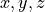

Lezione 9 - Python: Statement Complessi (1)¶
Codice condizionale: if¶
if/elif/else (se/altrimenti-se/altrimenti) permettono di
scrivere codice che viene eseguito solo se una condizione e’ soddisfatta:
if condizione:
print("la condizione e' vera")
oppure di gestire separatamente i due casi soddisfatta/non soddisfatta:
if condizione:
print("la condizione e' vera")
else:
print("la condizione e' falsa")
oppure n casi diversi:
if condizione_1:
print("la prima condizione e' vera")
elif condizione_2:
print("la seconda condizione e' vera")
elif condizione_3:
print("la terza condizione e' vera")
else:
print("nessuna condizione e' vera")
L’if, gli elif e l’else formano una “catena”: sono mutualmente
esclusivi, solo uno tra loro viene eseguito!
Esempio. Il codice in un elif ed else e’ mutualmente
esclusivo con quello dei vari if ed elif che lo precedono.
Ad esempio, supponiamo di avere due variabili Boolean c1 e c2.
Guardiamo in dettaglio in che caso vengono eseguite le varie righe di codice
nell’ultimo esempio:
# c1 c2 | c1 c2 | c1 c2 | c1 c2
# True True | True False | False True | False False
# ----------|------------|------------|------------
print("inizio") # si | si | si | si
if c1: # si | si | si | si
print("1") # si | si | no | no
elif c2: # no | no | si | si
print("2") # no | no | si | no
else: # no | no | no | si
print("0") # no | no | no | si
print("fine") # si | si | si | si
E’ chiaro che se c1 e’ vera, il valore di c2 (ed il corrispondente
elif c2) non influenza il comportamento del programma: se l’if viene
eseguito (cioe’ se c1 e’ vera) gli elif ed else successivi non
vengono neanche considerati!
Supponiamo di voler stampare "1" se c1 e’ vera, ed anche "2" se
c2 e’ vera – in modo del tutto indipendente. Posso fare cosi’:
print("inizio")
if c1:
print("1")
if c2:
print("2")
if not c1 and not c2:
print("0")
print("fine")
Qui gli if non formano una “catena”: sono indipendenti l’uno dall’altro!
Esempio. Python usa l’indentazione per decidere quale codice fa parte
dell’if e quale no.
Scrivo un programma Python per testare se l’utente e’ un telepate:
print("sto pensando ad un numero tra 1 e 10...")
telepate = int(input("qual'e'? ")) == 6
print("sto calcolando...")
if telepate:
print("DING DING DING DING!")
print("COMPLIMENTI!")
print("sei un telepate certificato!")
else:
print("grazie per aver giocato")
print("riprova di nuovo")
print("fine.")
Come si vede eseguendo l’esempio con l’interprete, Python considera dentro
l’if tutti i print() indentati.
Esempio. Questo codice apre un file e controlla (i) se e’ vuoto, e (ii)
se contiene intestazioni (righe che cominciano per ">"), reagendo di
conseguenza:
print("comincio...")
righe = open("data/prot-fasta/1A3A.fasta").readlines()
if len(righe) == 0:
print("il file FASTA e' vuoto")
else:
primi_caratteri_di_ogni_riga = [riga[0] for riga in righe]
if not (">" in primi_caratteri_di_ogni_riga):
print("il file FASTA non e' valido")
else:
print("il file FASTA e' valido")
print("fatto!")
Quiz:
E’ possibile che il codice stampi sia che il file e’ vuoto, sia che e’ valido?
E’ possibile che il codice non stampi
"comincio..."o"fatto!"?Se il file e’ effettivamente vuoto, quando Python esegue la riga
print("fatto!"), che valore ha la variabileprimi_caratteri_di_ogni_riga?Posso semplificare il codice usando
elif?
Esercizi¶
Warning
Non dimenticate i due punti!
Se provo a scrivere un if e dimentico i due punti, es.:
>>> condizione = input("Dimmi si: ") == "si"
>>> if condizione
appena premo invio, Python mi dice che la sintassi e’ errata:
File "<stdin>", line 1
if condizione
^
SyntaxError: invalid syntax
e si rifiuta di eseguire il codice. Quindi e’ facile riconoscere l’errore.
Warning
State attenti all’indentazione!
Sbagliare l’indentazione modifica il comportamento del programma senza pero’ renderlo necessariamente invalido.
In alcuni casi e’ facile capire cosa sta succedendo, es.:
>>> condizione = input("Dimmi si: ") == "si"
>>> if condizione:
>>> print("hai detto:")
>>> print("si")
Python da’ errore immediatamente:
File "<stdin>", line 4
print("si")
^
IndentationError: unexpected indent
In altri invece l’errore e’ molto piu’ sottile. Vedi sezione su codice annidato.
Chiedere all’utente un numero con
input(). Se il numero e’ pari, stampare"pari"a schermo, se e’ dispari, stampare"dispari".Hint.
input()restituisce sempre una stringa.Chiedere all’utente un numero razionale. Se il numero e’ nell’intervallo
![[-1,1]](_images/math/3e79b1d96f80fc611bf0f46645d37cc33614879f.png) , stampare
, stampare "okay", altrimenti non stampare niente.Hint. E’ necessario usare
elif/else?Chiedere all’utente due numeri interi. Se il primo e’ maggiore del secondo, stampare
"primo", se il secondo e’ maggiore del primo stampare"secondo", altrimenti stampare"nessuno dei due".Dato il dizionario:
oroscopo_di = { "gennaio": "fortuna estrema", "febbraio": "fortuna galattica", "marzo": "fortuna incredibile", "aprile": "ultra-fortuna", }
chiedere all’utente il suo mese di nascita. Se il mese appare come chiave nel dizionario
oroscopo_di, stampare a schermo il valore corrispondente. Altrimenti stampare"non disponibile".Hint. Per controllare se una chiave appare in un dizionario si puo’ usare
key in dict.Chiedere all’utente il percorso ad un file e leggere i contenuti del file con il metodo
readlines(). Poi stampare:Se il file e’ vuoto, la stringa
"vuoto"Se il file ha meno di 100 righe,
"piccolo"e il numero di righe.Se il file ha tra le 100 e le 1000 righe,
"medio"e il numero di righe.Altrimenti,
"grande"e il numero di righe.
La risposta deve essere stampata su una sola riga.
Chiedere all’utente due triplette di razionali (usando due chiamate a
input()). Le due triplette rappresentano due punti nello spazio tridimensionale (tre coordinate  a testa).Se tutte le coordinate sono non-negative, stampare a schermo la distanza Euclidea dei due punti.
Hint: la distanza Euclidea e’

E’ possibile che questo codice:
numero = int(input("scrivi un numero: ")) if numero % 3 == 0: print("divide 3!") elif numero % 3 != 0: print("non divide 3!") else: print("boh")
stampi
"boh"?E’ possibile che questo codice:
numero = int(input("scrivi un numero: ")) if numero % 2 == 0: print("divide 2!") if numero % 3 == 0: print("divide 3!") if numero % 2 != 0 and numero % 3 != 0: print("boh")
stampi
"boh"?Chiedere all’utente se vuole eseguire una somma o un prodotto.
Se l’utente vuole eseguire una somma, chiedere due numeri, effettuare la somma, e stampare il risultato.
Idem se l’utente vuole eseguire un prodotto.
Se l’utente non risponde ne’
"somma"ne’"prodotto", non fare niente.
Codice iterativo: for¶
for permette di scrivere codice che viene ripetuto (una ed una sola volta)
per ciascun elemento di una collezione (stringa, lista, tupla, dizionario).
La sintassi di for e’:
collezione_di_oggetti = range(10) # ad esempio (i numeri da 0 a 10 escluso)
for elemento in collezione_di_oggetti:
codice_che_fa_qualcosa_con_elemento(elemento)
Questo ciclo for esegue codice_che_fa_qualcosa_con_elemento() per
ciascun elemento in collezione_di_oggetti, in ordine dal primo all’ultimo.
elemento e’ una variabile Python che prende il valore di ciascun elemento
di collezione_di_oggetti, dal primo all’ultimo: viene “creata” sul momento
quando scriviamo il ciclo for.
Proprio come con le list comprehension, il nome che le diamo e’ arbitrario.
Warning
Se collezione_di_oggetti e’ un dizionario, for itera sulle chiavi.
Occhio che l’ordine delle chiavi in un dizionario non e’ ovvio. Si veda sopra la sezione sui dizionari.
Warning
Spesso si utilizza il ciclo for accoppiato con l’istruzione range gia’ vista
in precedenza. Ricordiamoci che l’istruzione range puo’ prendere fino a tre
parametri:
range(start,end,step)
range(20) = [0, 1, 2, 3, 4, 5, 6, 7, 8, 9, 10, 11, 12, 13, 14, 15, 16, 17, 18, 19]
range(5,20) = [5, 6, 7, 8, 9, 10, 11, 12, 13, 14, 15, 16, 17, 18, 19]
range(5,20,2) = [5, 7, 9, 11, 13, 15, 17, 19]
Esempio. Questo ciclo for:
lista = [1, 25, 6, 27, 57, 12]
for numero in lista:
print(numero)
itera su tutti gli elementi del risultato di lista: prima l’elemento 1,
poi l’elemento 25, etc., fino a 12, e li stampa nell’ordine in
cui appaiono nella lista.
Ad ogni iterazione il valore dell’elemento corrente viene automaticamente
messo nella variabile numero, mentre il print ne stampa il valore.
Posso ottenere lo stesso comportamento anche senza il ciclo for, cosi’:
numero = lista[0] # prima iterazione
print(numero)
numero = lista[1] # seconda iterazione
print(numero)
numero = lista[2] # terza iterazione
print(numero)
# ...
numero = lista[5] # ultima iterazione
print(numero)
Il for permette di compattare questo codice in due sole righe.
Esempio. Piuttosto che stampare gli elementi della lista, voglio stampare la loro somma.
Modifico il for dell’esempio sopra:
lista = [1, 25, 6, 27, 57, 12]
somma = 0
for numero in lista:
somma = somma + numero
print("la somma e'", somma)
Ho creato una variabile di supporto somma che inizializzo a 0.
Poi scorro su tutti i numeri contenuti in lista, e man mano li aggiungo a
somma.
Una volta terminato il ciclo for, somma varra’ (per costruzione):
lista[0] + lista[1] + ... + lista[-1]
che e’ esattamente la somma degli elementi.
Esempio. Piuttosto che calcolare la somma degli elementi della lista, voglio trovare il massimo.
L’idea e’ questa:
Itero la lista con un
for.Creo una nuova variabile
massimo_fino_ad_orain cui memorizzo l’elemento piu’ grande che ho trovato fino ad ora. Il valore viene aggiornato ad ogni iterazione del ciclofor.Per ogni elemento della lista (cioe’ in ogni iterazione del
for) controllo se l’elemento che ho sotto mano e’ piu’ grande dimassimo_fino_ad_ora:Se non lo e’, non faccio niente.
Se lo e’, aggiorno
massimo_fino_ad_ora.
Quando il
foravra’ finito di scorrere sugli elementi della lista,massimo_fino_ad_oraconterra’ (suspance!) il massimo elemento trovato fino ad ora.
PROVATE VOI
Esempio. Data la seguente tabella (che potrebbe essere il risultato
di readlines() su un file):
tabella = [
"protein domain start end",
"YNL275W PF00955 236 498",
"YHR065C SM00490 335 416",
"YKL053C-A PF05254 5 72",
"YOR349W PANTHER 353 414",
]
voglio convertirla in un dizionario fatto cosi’:
dati = {
"YNL275W": ("PF00955", 236, 498),
"YHR065C": ("SM00490", 335, 416),
"YKL053C-A": ("PF05254", 5, 72),
"YOR349W": ("PANTHER", 353, 414)
}
che contiene per ogni dominio (riga) di tabella, esclusa l’intestazione,
come chiave la proteina corrispondente (prima colonna) e come valore le
informazioni associate (altre colonne: nome, inizio e fine del dominio).
PROVATE VOI
Esempio. break permette di interrompere il ciclo for. Ad
esempio:
percorso = input("scrivi un percorso a file: ")
righe = open(percorso).readlines()
for riga in righe:
riga = riga.strip()
print("ho letto:", riga)
if len(riga) == 0:
# se la riga e' vuota, esco dal ciclo
break
# <--- il break ci porta immediatamente QUI
legge le righe dal file indicato dall’utente, e le stampa una per una. Pero’
appena incontra una riga vuota (vedi l’if), esce dal ciclo.
Esempio. continue permette di passare all’iterazione successiva del
for. Ad esempio:
percorso = input("scrivi un percorso a file: ")
righe = open(percorso).readlines()
for riga in righe:
# <--- il continue ci riporta QUI, ma all'iterazione
# (e quindi all'elemento di righe) successivo
riga = riga.strip()
print("ho letto:", riga)
if riga[0] == ">":
print("intestazione")
continue
print("sequenza")
legge le righe del file indicato dall’utente, che supponiamo essere un
file fasta. Stampa ogni riga che incontra. Poi, se la riga e’ un’intestazione,
stampa "intestazione" ed il continue fa saltare a Python tutto cio’
che c’e’ tra il continue stesso e la fine dell’iterazione corrente del ciclo for.
In altre parole, salta all’iterazione successiva. Python riprende noncurante
l’esecuzione all’elemento successivo di righe, e riprende ad eseguire il
for.
Codice iterativo: while¶
while permette di scrivere codice che viene ripetuto finche’ una
condizione e’ vera.
La sintassi e’:
while condizione:
condizione = codice_che_fa_qualcosa_e_aggiorna_condizione()
Il codice all’interno del while viene ripetuto un numero indefinito
di volte: dipende da quanto ci mette condizione a diventare False.
Esempio. Scrivo un ciclo while che chiede all’utente se vuole
fermarsi, e continua a chiedere finche’ l’utente non risponde "si":
while input("vuoi che mi fermi? ") != "si":
print("se non rispondi 'si' non mi fermo!")
Esempio. Esattamente come con il for, posso usare continue e
break per alterare il flusso del ciclo. Ad esempio:
while True:
risposta = input("qual'e la capitale d'Italia? ")
if risposta.lower() == "roma":
print("giusto!")
break
print("riprova!")
# <--- il break ci porta QUI
print("finito")
questo codice continua a girare finche’ l’utente non risponde "roma" (con
maiuscole o minuscole, poco importa).
Riscrivo il ciclo per fare in modo che chieda all’utente se continuare o meno:
while True:
risposta = input("qual'e' la capitale d'Italia? ")
if risposta.lower() == "roma":
print("giusto!")
break # esce dal while
else:
print("doh!")
risposta = input("vuoi riprovare? ")
if risposta.lower() == "no":
print("va bene")
break # esce dal while
Esercizi¶
Scrivere un ciclo
forche:Stampi a schermo gli elementi di
range(10), uno per riga.Stampi a schermo il quadrato degli elementi di
range(10), uno per riga.Stampi a schermo la somma dei quadrati di
range(10).Stampi a schermo il prodotto degli elementi di
range(1,10).Dato il dizionario:
volume_di = { "A": 67.0, "C": 86.0, "D": 91.0, "E": 109.0, "F": 135.0, "G": 48.0, "H": 118.0, "I": 124.0, "K": 135.0, "L": 124.0, "M": 124.0, "N": 96.0, "P": 90.0, "Q": 114.0, "R": 148.0, "S": 73.0, "T": 93.0, "V": 105.0, "W": 163.0, "Y": 141.0, }
che codifica il volume di ciascun aminoacido, stampi a schermo la somma dei valori.
Dato il dizionario:
volume_di = { "A": 67.0, "C": 86.0, "D": 91.0, "E": 109.0, "F": 135.0, "G": 48.0, "H": 118.0, "I": 124.0, "K": 135.0, "L": 124.0, "M": 124.0, "N": 96.0, "P": 90.0, "Q": 114.0, "R": 148.0, "S": 73.0, "T": 93.0, "V": 105.0, "W": 163.0, "Y": 141.0, }
che codifica il volume di ciascun aminoacido, e la stringa FASTA:
fasta = """>1BA4:A|PDBID|CHAIN|SEQUENCE DAEFRHDSGYEVHHQKLVFFAEDVGSNKGAIIGLMVGGVV"""
stampi a schermo il volume totale della proteina (leggi: la somma dei volumi di tutti i suoi residui).
Hint. Prima conviene estrarre la sequenza vera e propria da
fasta, poi, per ciascun carattere nella sequenza (for carattere in sequenza) prendere dal dizionario il volume corrispondente e sommarlo al totale.Trovi il valore minimo della lista
[1, 25, 6, 27, 57, 12].Hint. Si veda l’esempio sopra in cui troviamo il massimo della lista. E’ sufficiente adattare la logica che decide quando aggiornare la variabile ausiliaria (e magari rinominarla da
massimo_fino_ad_oraaminimo_fino_ad_ora).Trovi sia il massimo che il minimo della lista
[1, 25, 6, 27, 57, 12].Hint. E’ necessario usare due variabili ausiliarie:
massimo_fino_ad_oraeminimo_fino_ad_ora.Data la sequenza nucleotidica:
sequenza = "ATGGCGCCCGAACAGGGA"
restituisca la lista di tutte le sue sotto-sequenze di tre nucleotidi. La soluzione deve essere:
["ATG", "GCG", "CCC", "GAA", "CAG", "GGA"]
Hint: conviene iterare sul risultato di
range(0, len(sequenza), 3)ed aggiungere man mano ogni tripletta ad una lista vuota preventivamente creata.Dato il testo (in formato FASTA):
testo = """>2HMI:A|PDBID|CHAIN|SEQUENCE PISPIETVPVKLKPGMDGPKVKQWPLTEEKIKALVEICTEMEKEGKISKI >2HMI:B|PDBID|CHAIN|SEQUENCE PISPIETVPVKLKPGMDGPKVKQWPLTEEKIKALVEICTEMEKEGKISKI >2HMI:C|PDBID|CHAIN|SEQUENCE DIQMTQTTSSLSASLGDRVTISCSASQDISSYLNWYQQKPEGTVKLLIYY >2HMI:D|PDBID|CHAIN|SEQUENCE QITLKESGPGIVQPSQPFRLTCTFSGFSLSTSGIGVTWIRQPSGKGLEWL >2HMI:E|PDBID|CHAIN|SEQUENCE ATGGCGCCCGAACAGGGAC >2HMI:F|PDBID|CHAIN|SEQUENCE GTCCCTGTTCGGGCGCCA"""
restituisca un dizionario
sequenza_diche abbia come chiavi i nomi delle sequenze cosi’ come sono scritti nelle intestazioni (il primo sara’2HMI:A, il secondo2HMI:B, etc.), e come valore la sequenza corrispondente.Il risultato dovra’ somigliare a questo:
sequenza_di = { "2HMI:A": "PISPIETVPVKLKPGMDGPKVKQW...", "2HMI:B": "PISPIETVPVKLKPGMDGPKVKQW...", # ... }
Hint. Conviene prima spezzare
testonelle sue righe. Poi si puo’ iterare sulle righe cosi’ ottenute: se una riga e’ di intestazione, mi salvo il nome della sequenza corrispondente; se la riga invece e’ una sequenza, aggiorno il dizionario con il nome ottenuto alla riga sopra e la sequenza ottenuta dalla riga corrente.
Scrivere un ciclo
whileche:Continui a chiedere all’utente di scrivere
"STOP". Se l’utente scrive"STOP"(in maiuscolo) termina, senno’ scrive all’utente"devi scriviere 'STOP'..."e continua.Come sopra, ma deve terminare anche se l’utente risponde
"stop"in minuscolo.
Che cosa stampa a schermo questo codice?
for numero in range(10): print("processo l'elemento", numero)
for numero in range(10): print("processo l'elemento", numero) break
for numero in range(10): print("processo l'elemento", numero) continue
for numero in range(10): print(numero) if numero % 2 == 0: break
for numero in range(10): if numero % 2 == 0: break print(numero)
condizione = False while condizione: print("la condizione e' vera")
condizione = False while condizione: print("la condizione e' vera") condizione = True
condizione = True while condizione: print("la condizione e' vera")
numeri = range(10) i = 0 while i < len(numeri): print("all'indice", i, "c'e' l'elemento", numeri[i]) i += 1
righe = [ "riga 1", "riga 2", "riga 3", "", "riga 5", "riga 6", ] for riga in righe: riga = riga.strip() if len(riga) == 0: break else: print("ho letto:", riga)
Data la tupla:
numeri = (0, 1, 1, 0, 0, 0, 1, 1, 2, 1, 2)
scrivere un ciclo che itera su
numeri, si ferma appena incontra il valore2e ne stampa a schermo la posizione.Data la tupla:
stringhe = ("000", "51", "51", "32", "57", "26")
scrivere un ciclo che itera su
stringhe, si ferma appena incontra una stringa che contiene un carattere"2", e stampa a schermo posizione e valore della stringa sulla quale si e’ fermato.La soluzione e’: posizione
3, valore"32".